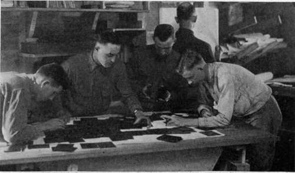
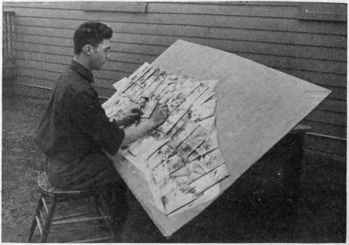
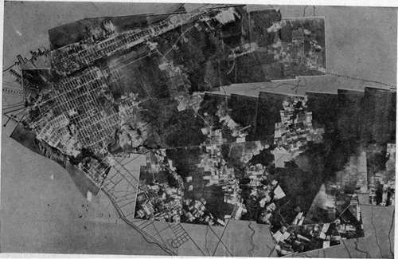

Printing And Mounting Mosaics
Description
This section is from the book "Airplane Photography", by Herbert E. Ives. Also available from Amazon: Airplane photography.
Printing And Mounting Mosaics
With an ordinary set of overlapping negatives the first step toward producing a map is to scale the negatives. For this purpose one should be selected which by comparison with a map shows no distortion, and which is on the desired scale, or is known to have been made at the average altitude of flight. A sketch map of the territory should then be drawn, on this scale, based on available maps. This sketch is preferably made on a large ground glass illuminated from behind (Fig. 141). On this all the negatives should be laid, and their proper relative positions sought. When this is done it is evident at once whether all the territory has been covered, and whether there are any superfluous negatives. Each negative should:
The next step is to make prints from the negatives, which may be done either by contact, or, necessarily if differences of scale must be compensated, in the enlarging camera. If prints to an exact scale are required the shrinkage of the paper must be determined and allowed for. The prints must all show the same tone, and must be uniform from edge to edge. If the focal-plane shutter is not uniform in its travel, as is frequently the case, this means that the print must be "dodged," or exposed more at one edge than the other, by locally shielding the plate and paper during exposure. A then be examined as to its scale and distortion. If it can be made to fit the scale by simple enlargement or reduction, a line can be drawn on one edge of a length indicating its scale. This line will later be used as a guide in the enlarging camera. If the picture is badly distorted it must either be replaced by another negative, or if rectifying apparatus is available, it must be set aside for the making of a rectified print case of the step-like effect caused by uneven shutter action is shown in Fig. 140. The effect due to uneven shutter action is of course absent with a between-the-lens shutter, which constitutes a strong argument in favor of that type for use in mapping cameras.
Fig. 141. - Scaling negatives for mosaic map-making.
When the prints are made they must be mounted together on a large card or cloth background. For a very small mosaic they may be juxtaposed by simple examination, matching corresponding details in successive prints. For a mosaic of any size an accurate outline map must be drawn on the surface to which the prints are to be attached. The prints are then laid out on this outline, moved to their correct positions, and held down by pins (Fig. 142). When they are all arranged the final mounting may be begun. The excess paper, beyond what is necessary for safe overlaps, may be trimmed off, exercising judgment as to which print of each adjacent pair is of the better quality, and utilizing it for the top one at the overlapping junction. If one print shows serious distortion it may be placed under its fellows on all four edges, thus minimizing its weight. The edges are best made irregular by tearing. Straight edges are apt to force themselves on one's attention in the final mosaic and give an erroneous impression of the existence of straight roads or other features. Both forms of edging are shown in Figs. 124 and 143.
Fig. 142. - Arranging prints for a mosaic map.
An alternative method of securing the final print mosaic, where film negatives are used, is to trim successive film negatives so that the trimmed sections will exactly juxtapose, instead of overlap. The sections are then mounted, by stickers at their edges, on a large sheet of glass, and printed together. Captured German prints show that this was the method commonly used with the German film camera (Fig. 62).
It will be noted that the procedure which has been described and illustrated by Figs. 142 and 143 assumes the previous existence of a map accurately placing at least the chief features of the country covered. This draws attention at once to the limitations and true sphere of aerial photographic mapping at the present time. With the cameras thus far it is not possible, nor is it attempted, to do primary mapping of unknown regions. Distortions due to lens, shutter, film warping and paper shrinkage considerably exceed the figures permitted in precision mapping. From the standpoint of geodetic accuracy the cumulative errors of deviations in direction, altitude and level, peculiar to flying, would soon become prohibitive.
The great field for aerial photographic mapping in the near future lies in filling in detail on maps heretofore completed as to general outlines, cr, as in the war, cn maps far out of date. The war-time procedure in country largely unknown, such as Mesopotamia, was probably closely that which will be necessary in peace. Conspicuous points in the landscape were first triangulated from friendly territory, and from these the outline map was drawn, whose details were to be supplied by aerial photographs. Much of the "mapping" of cross country aerial routes so far done is frankly of a pictorial nature, showing conspicuous landmarks and good landing fields—extremely valuable and useful, but not to be confused with precision mapping. In assembling mosaics of this kind the elaborate procedure described above is not followed. The process is the simple one of juxtaposing adjacent prints as accurately as possible by visual examination. Errors are of course cumulative, but as long as exact distances are not in question this is no matter.
Fig. 143. - A partly completed map. Prints mounted over an outline sketch map to proper scale.
Continue to:
- prev: Cameras And Auxiliaries For Map Making
- Table of Contents
- next: Chapter XXVII. Oblique Aerial Photography
Tags
camera, lens, airplane, aerial, film, exposure, photography, maps, birdseye